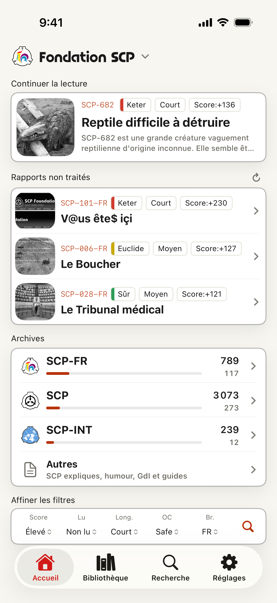
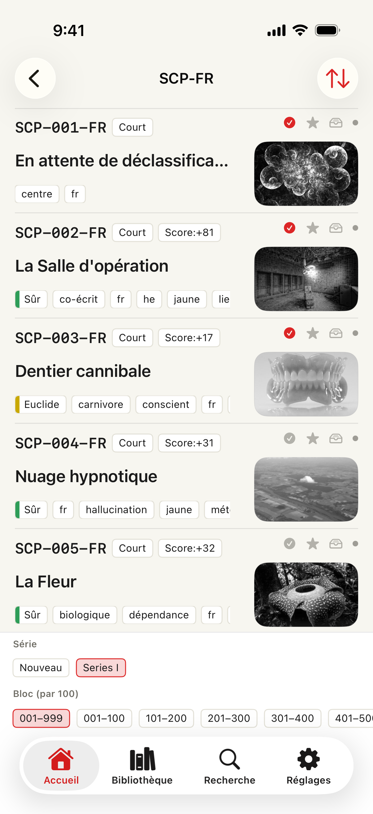
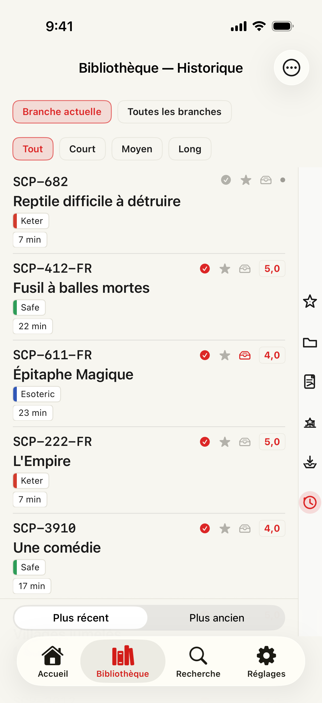
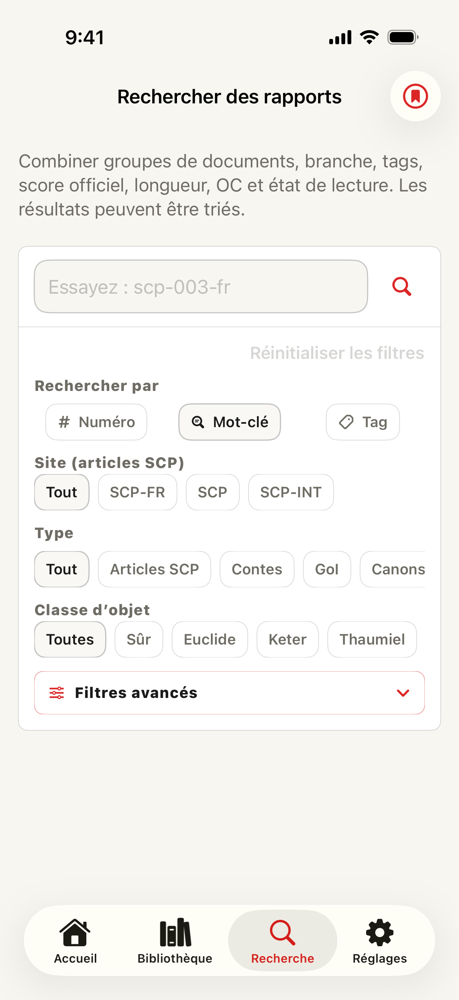

▮ ITEM #: SCP-DOCS-APP · OBJECT CLASS: READER
Secure.
Contain.
Read.
SCP Docs est un lecteur iOS non officiel et fan-made pour les articles du SCP Wiki et de ses branches. Il transforme les pages publiques en espace de lecture natif pour parcourir les archives, chercher par branche, sauvegarder ce qui compte et reprendre vos rapports en cours.
- App fan non officielle
- Gratuit + Premium
- 13+
- Sans compte

Field screens
Écrans alignés sur le flux



Reading workspace
Lire, chercher, organiser, reprendre
L'app s'organise autour d'Accueil, Bibliothèque, Recherche et Réglages. L'accueil met en avant la reprise de lecture, les préréglages de recherche, la découverte aléatoire et des itinéraires plus clairs vers Stories, Tales, Canons, Series, GoI, guides et collections associées.
Historique, état lu/non lu, notes, favoris, éléments à lire plus tard, position de défilement, mémos, dossiers et reprise de lecture restent liés aux articles ouverts, pour garder votre parcours visible sur l'appareil. Les articles se rouvrent automatiquement à votre dernière position de défilement, et les éléments « À lire plus tard » sont stockés automatiquement hors ligne.
Content scope
Sept branches, un même flux de lecture
SCP Docs prend en charge l'archive principale anglaise de la SCP Foundation ainsi que les branches japonaise, française, russe, coréenne, espagnole et polonaise. Changer de branche modifie l'accueil, la recherche, les listes intégrées, les destinations d'articles et la langue de l'interface. SCP International et les archives traduites sont listés lorsque les données de catalogue existent.
- Listes d'archives — SCP, Tales, Canons, séries Canon, GoI, Joke SCP, SCP-EX, collections, articles récents et répertoires associés.
- Catalogues — Chaque catalogue ajoute un filtre « Non lus », un tri par numéro ou note officielle, et une loupe « Les mieux notés » réunissant les articles les mieux notés de chaque branche.
- Recherche — la recherche par numéro et titre est gratuite. Premium ajoute des filtres par documents, tags, classe d'objet, mémos, état de lecture, score officiel, longueur et recherches enregistrées.
- Bibliothèque — favoris, à lire plus tard, notes, mémos, dossiers et position de défilement restent liés aux articles pour y revenir plus facilement.
- Lecteur — typographie plus claire, thèmes, outils de défilement, meilleur mode sombre et rendu plus fidèle des pages à mise en forme spéciale.
Premium
Des outils pour lire plus loin
- Statistiques de lecture
- Temps de lecture, progression du catalogue, classes d'objet et tags les plus lus, tendances de notes, mémos, pile à lire et journaux par jour, mois et année.
- Recherches enregistrées
- Enregistrez des critères et recevez une notification sur l'appareil quand de nouvelles entrées correspondantes apparaissent.
- Dossiers de favoris
- Organisez les articles sauvegardés dans des dossiers pouvant se synchroniser via votre iCloud Drive, avec mémos et recherches enregistrées.
- Écouter et sauvegarder
- La synthèse vocale lit les articles à voix haute dans la langue de l'article plutôt que celle de l'app, et les instantanés hors ligne gardent les articles éligibles accessibles sans connexion.
- Partager en cartes
- Transformez un article ou une liste choisie en carte de partage pour X et d'autres apps sociales, avec modèles et commentaire facultatif.
- Publicités et limites
- Premium masque les publicités, étend les limites de sauvegarde, déverrouille l'édition de mémos et la recherche avancée. Une publicité récompensée peut donner un accès Premium temporaire lorsqu'elle est disponible.
Requirements
Configuration requise
- OS — iOS 17 ou version ultérieure.
- Réseau — requis pour actualiser les catalogues, lire en ligne, charger les sites sources, publicités, vérifications d'achat et liens externes.
- Comptes — aucun compte SCP Foundation ou Wikidot n'est requis pour lire dans l'app.
Deployment
Ouvrir l'archive
SCP Docs est une application fan non officielle. Les articles sources, crédits d'auteurs, mentions de copyright et conditions de licence restent régis par les sites sources. Les œuvres SCP sont généralement publiées sous Creative Commons BY-SA 3.0, mais chaque page source fait autorité.